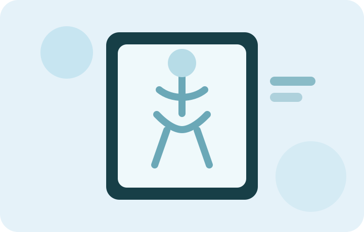

ATENDIMENTO
Consultas médicas
Acompanhamento organizado por agenda, com foco em acolhimento e orientação.
Ver informaçõesUm portal acadêmico inspirado no cenário da Clínica Vida Plena, com acesso rápido aos principais serviços de consultas e diagnóstico por imagem.
Representação conceitual gerada por IA para este projeto acadêmico.
Conheça as opções de atendimento e consulte os horários antes de simular sua solicitação.
Acompanhamento organizado por agenda, com foco em acolhimento e orientação.
Ver informações
Serviço de imagem presente no cenário acadêmico com maior volume diário de exames.
Ver informaçõesExames de imagem com fluxo de atendimento simples e orientação no agendamento.
Ver informaçõesExame de maior volume de dados do cenário, integrado ao fluxo de diagnóstico por imagem.
Ver informaçõesA interface prioriza as ações que um paciente precisa encontrar rapidamente: compreender, escolher e solicitar.
Conheça os principais serviços e informações da clínica.
Consulte horários, demanda do cenário e modalidade de atendimento.
Escolha o serviço e o período para simular sua solicitação.